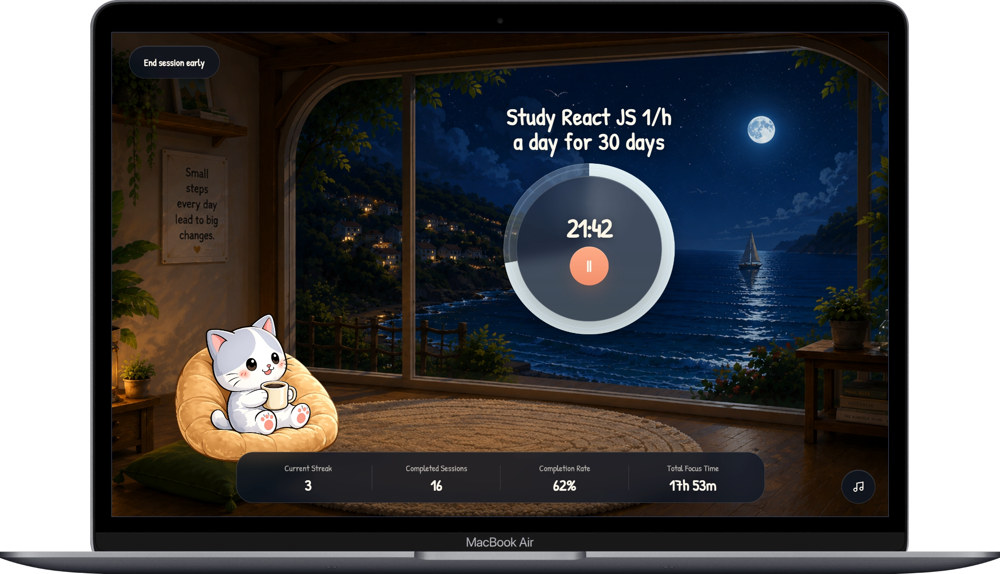
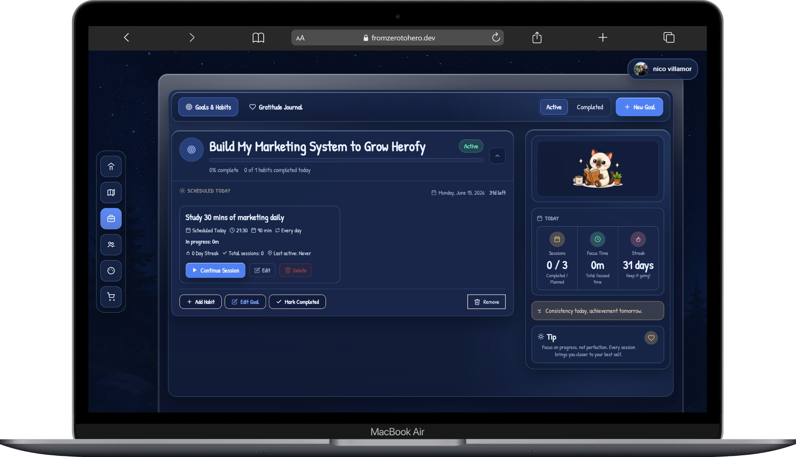
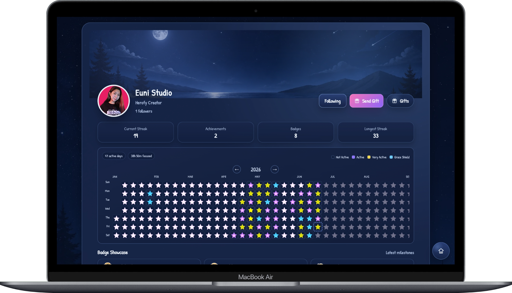
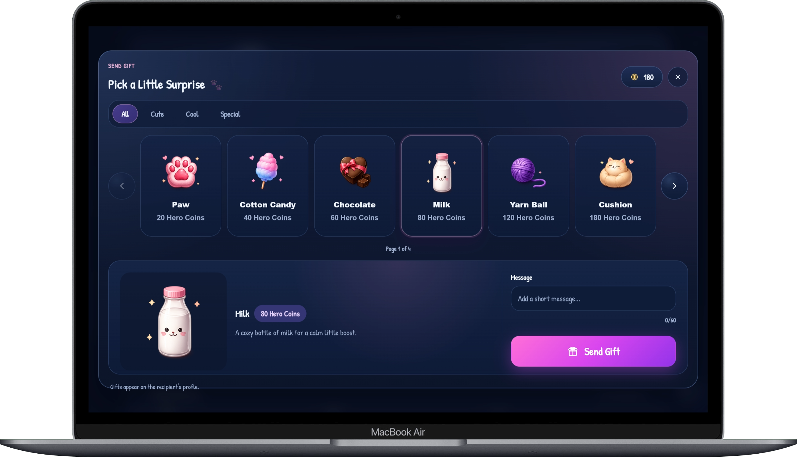

Portfolio Details




From Zero to Hero
A proprietary full-stack habit-tracking and personal growth platform designed to build consistency through structure, clarity, and measurable progress. Currently in private beta and architected for long-term scalability and commercialization.
From Zero to Hero is a full-stack productivity web application inspired by Michael Hyatt’s book “Your Best Year Ever.”
This project began as a personal system I created to help myself regain focus, consistency, and direction during a challenging period in my life and career. Instead of just reading about productivity concepts, I wanted to transform what I learned into a practical tool I could actually use every day.
While the project is still ongoing, it represents my approach to building thoughtful systems—combining structure, clarity, and simplicity to support real human needs.
At the time I started this project, I was struggling with motivation, self-control, and consistency—both personally and professionally. I was close to stepping away from my programming career altogether.
Most productivity tools felt overwhelming or assumed users already had strong discipline. The challenge was not just technical, but human:
- How do you design a system for people who easily lose focus?
- How do you encourage progress without pressure or guilt?
- How do you keep things simple without losing effectiveness?
This project needed to work for someone like me—someone rebuilding momentum from zero.
The solution was to build a gentle but structured productivity system based on the principles I learned from “Your Best Year Ever.”
From Zero to Hero focuses on:
- Simple, Pomodoro-based focus sessions
- Clear visual structure and minimal UI
- Small, achievable steps instead of overwhelming goals
- Systems that support consistency over perfection
Building this project helped me reconnect with my passion for coding. Even though it’s still evolving, it gave me renewed confidence, hope, and the courage to continue growing as a developer—while creating something that may also help others facing the same struggles.
Key Features
- Visual progress indicators that reinforce consistency and momentum
- Clean, distraction-free UI designed for focus and clarity
- Modular system design that supports future feature expansion
- Real-time session tracking with client-side state management
- Secure authentication and protected user routes
- Responsive layout optimized for multiple screen sizes